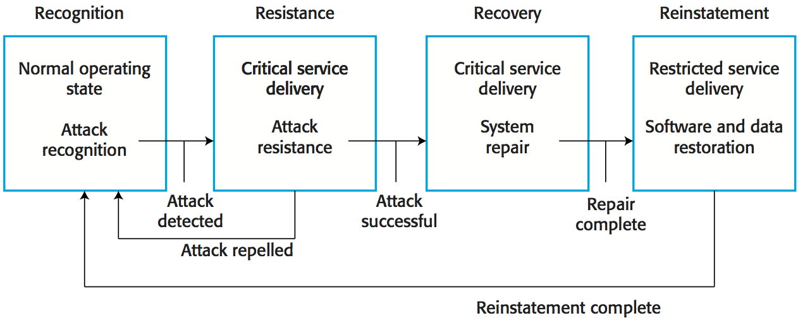
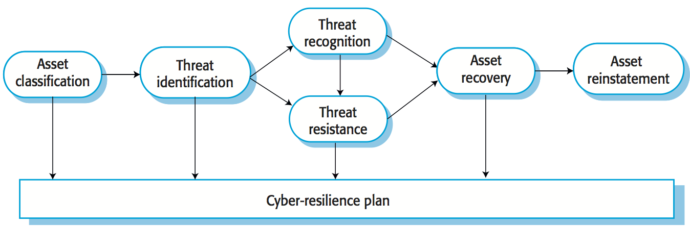
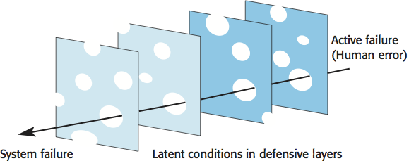

Reference: Sommerville, Software Engineering, 10 ed., Chapter 14
The resilience of a system is a judgment of how well that system can maintain the continuity of its critical services in the presence of disruptive events, such as equipment failure and cyberattacks. This view encompasses these three ideas:
- Some of the services offered by a system are critical services whose failure could have serious human, social or economic effects.
- Some events are disruptive and can affect the ability of a system to deliver its critical services.
- Resilience is a judgment - there are no resilience metrics and resilience cannot be measured. The resilience of a system can only be assessed by experts, who can examine the system and its operational processes.
Resilience engineering places more emphasis on limiting the number of system failures that arise from external events such as operator errors or cyberattacks. Assumptions:
- It is impossible to avoid system failures and so is concerned with limiting the costs of these failures and recovering from them.
- Good reliability engineering practices have been used to minimize the number of technical faults in a system.
Four related resilience activities are involved in the detection and recovery from system problems:
- The system or its operators should recognize early indications of system failure.
- If the symptoms of a problem or cyberattack are detected early, then resistance strategies may be used to reduce the probability that the system will fail.
- If a failure occurs, the recovery activity ensures that critical system services are restored quickly so that system users are not badly affected by failure.
- In this final activity, all of the system services are restored and normal system operation can continue.

Cybercrime is the illegal use of networked systems and is one of the most serious problems facing our society.
Cybersecurity is a broader topic than system security engineering.
Cybersecurity is a socio-technical issue covering all aspects of ensuring the protection of citizens, businesses, and critical infrastructures from threats that arise from their use of computers and the Internet.
Cybersecurity is concerned with all of an organization's IT assets from networks through to application systems.
Factors contributing to cybersecurity failure:
- Organizational ignorance of the seriousness of the problem,
- Poor design and lax application of security procedures,
- Human carelessness,
- Inappropriate trade-offs between usability and security.
Cybersecurity threats:
- Threats to the confidentiality of assets: data is not damaged but it is made available to people who should not have access to it.
- Threats to the integrity of assets: systems or data are damaged in some way by a cyberattack.
- Threats to the availability of assets: aim to deny the use of assets by authorized users.
Examples of controls to protect the assets:
- Authentication, where users of a system have to show that they are authorized to access the system.
- Encryption, where data is algorithmically scrambled so that an unauthorized reader cannot access the information.
- Firewalls, where incoming network packets are examined then accepted or rejected according to a set of organizational rules.
Redundancy and diversity are valuable for cybersecurity resilience:
- Copies of data and software should be maintained on separate computer systems (supports recovery and reinstatement).
- Multi-stage diverse authentication can protect against password attacks (supports resistance).
- Critical servers may be over-provisioned i.e. they may be more powerful than is required to handle their expected load (supports resistance).
Cyber resilience planning:
- Asset classification: the organization's hardware, software and human assets are examined and classified depending on how essential they are to normal operations.
- Threat identification: for each of the assets (or, at least the critical and important assets), you should identify and classify threats to that asset.
- Threat recognition: for each threat or, sometimes asset/threat pair, you should identify how an attack based on that threat might be recognized.
- Threat resistance: for each threat or asset/threat pair, you should identify possible resistance strategies. These may be either embedded in the system (technical strategies) or may rely on operational procedures.
- Asset recovery: for each critical asset or asset/threat pair, you should work out how that asset could be recovered in the event of a successful cyberattack.
- Asset reinstatement: this is a more general process of asset recovery where you define procedures to bring the system back into normal operation.

Socio-technical resilience
Resilience engineering is concerned with adverse external events that can lead to system failure.
To design a resilient system, you have to think about socio-technical systems design and not exclusively focus on software.
Dealing with these events is often easier and more effective in the broader socio-technical system.
Four characteristics that reflect the resilience of an organization:
- The ability to respond
- Organizations have to be able to adapt their processes and procedures in response to risks. These risks may be anticipated risks or may be detected threats to the organization and its systems.
- The ability to monitor
- Organizations should monitor both their internal operations and their external environment for threats before they arise.
- The ability to anticipate
- A resilient organization should not simply focus on its current operations but should anticipate possible future events and changes that may affect its operations and resilience.
- The ability to learn
- Organizational resilience can be improved by learning from experience. It is particularly important to learn from successful responses to adverse events such as the effective resistance of a cyberattack. Learning from success allows.
People inevitably make mistakes (human errors) that sometimes lead to serious system failures. There are two ways to consider human error:
- The person approach. Errors are considered to be the responsibility of the individual and 'unsafe acts' (such as an operator failing to engage a safety barrier) are a consequence of individual carelessness or reckless behavior.
- The systems approach. The basic assumption is that people are fallible and will make mistakes. People make mistakes because they are under pressure from high workloads, poor training or because of inappropriate system design.
Systems engineers should assume that human errors will occur during system operation.
To improve the resilience of a system, designers have to think about the defense and barriers to human error that could be part of a system.
Can these barriers should be built into the technical components of the system (technical barriers)? If not, they could be part of the processes, procedures and guidelines for using the system (socio-technical barriers).

Defensive layers have vulnerabilities: they are like slices of Swiss cheese with holes in the layer corresponding to these vulnerabilities.
Vulnerabilities are dynamic: the 'holes' are not always in the same place and the size of the holes may vary depending on the operating conditions.
System failures occur when the holes line up and all of the defenses fail.
Strategies to increase system resilience:
- Reduce the probability of the occurrence of an external event that might trigger system failures.
- Increase the number of defensive layers. The more layers that you have in a system, the less likely it is that the holes will line up and a system failure occur.
- Design a system so that diverse types of barriers are included. The 'holes' will probably be in different places and so there is less chance of the holes lining up and failing to trap an error.
- Minimize the number of latent conditions in a system. This means reducing the number and size of system 'holes'.
Designing systems for resilience involves two streams of work:
- Identifying critical services and assets that allow a system to fulfill its primary purpose.
- Designing system components that support problem recognition, resistance, recovery and reinstatement.
Survivable systems analysis
- System understanding: for an existing or proposed system, review the goals of the system (sometimes called the mission objectives), the system requirements and the system architecture.
- Critical service identification: the services that must always be maintained and the components that are required to maintain these services are identified.
- Attack simulation: scenarios or use cases for possible attacks are identified along with the system components that would be affected by these attacks.
- Survivability analysis: components that are both essential and compromisable by an attack are identified and survivability strategies based on resistance, recognition and recovery are identified.